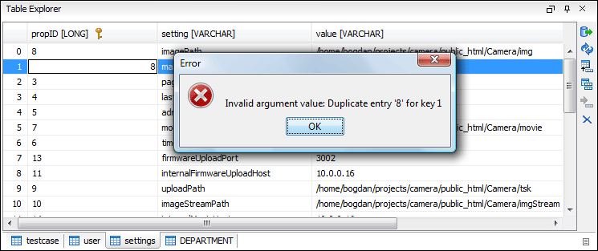

Table Explorer View
Relational databases tables in the Data Source Explorer view can be displayed and edited in the Table Explorer view by selecting the Edit action from the contextual menu of a Table node or by double-clicking one of its fields. To modify the content of a cell, double-click it and start typing. When editing is complete, Oxygen XML Author attempts to update the database with the new cell content.
You can sort the content of a table by one of its columns by clicking its column header.
Note the following:
- The first column is an index (not part of the table structure).
- Every column header contains the field name and its data type.
- The primary key columns are marked with this symbol: .
- Multiple tables are presented in a tabbed manner.
For performance issues, you can set the maximum number of cells that are displayed in the Table Explorer view (using the Limit the number of cells option in the Data Sources Preferences page). If a table that has more cells than the value set in the options is displayed in the Table Explorer view, a warning dialog box informs you that the table is only partially shown.
You are notified if the value you have entered in a cell is not valid (and thus cannot be updated).
-
If the content of the edited cell does not belong to the data type of the column, the cell is marked by a red square and remains in an editing state until a correct value is inserted. For example, in the following figure
propIDcontainsLONGvalues. If a character or string is inserted, the cell will look like this:Figure 2. Cell Containing an Invalid Value 
-
If the constraints of the database are not met (for instance, primary key constraints), an information dialog box will appear, notifying you of the reason the database has not been updated. For example, in the table below, trying to set the second record in the primary key
propIDcolumn to 8, results in a duplicate entry error since that value has already been used in the first record:Figure 3. Duplicate Entry for Primary Key 
Table Explorer Contextual Menu Actions
Common editing actions ( Cut,
Cut,  Copy,
Copy,  Paste, Select All, Undo,
Paste, Select All, Undo,  Redo) are available in the contextual menu of an edited cell.
Redo) are available in the contextual menu of an edited cell.
The contextual menu, available on every cell in the Table Explorer view, also includes the following actions:
- Set NULL
- Sets the content of the cell to null. This action is not available for columns that cannot have a value of null.
 Insert
row
Insert
row- Inserts an empty row in the table.
 Duplicate row
Duplicate row- Makes a copy of the selected row and adds it in the Table Explorer view. Note that the new row will not be inserted in the database table until all conflicts are resolved.
- Commit row
- Commits the selected row.
- Delete row
- Deletes the selected row.
- Copy
- Copies the content of the cell.
- Paste
- Pastes copied content into the selected cell.
Table Explorer Toolbar Actions
The toolbar of the Table Explorer view also includes the following actions:
- Export to XML
- Opens the Export Criteria dialog box .
- Refresh
- Performs a refresh for the sub-tree of the selected node.
- Insert
row
- Inserts an empty row in the table.
- Duplicate row
- Makes a copy of the selected row and adds it in the Table Explorer view. Note that the new row will not be inserted in the database table until all conflicts are resolved.
- Commit row
- Commits the selected row.
- Delete row
- Deletes the selected row.